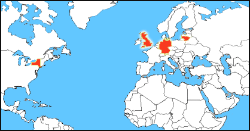
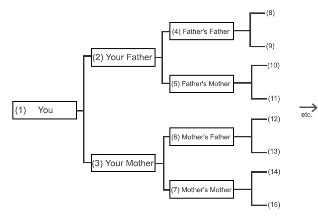
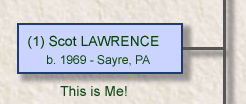
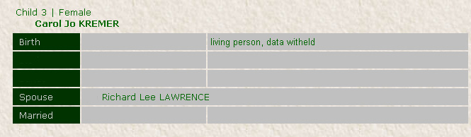
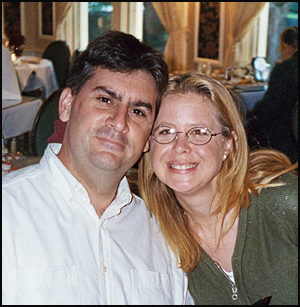

|

|
|
|
|
The Lawrence & Chase Genealogy Page.
Welcome to the Lawrence & Chase Genealogy page! My name is
Scot
Lawrence,
I was born in Sayre, Pennsylvania, grew up in
nearby Waverly
NY, and currently live in Rochester, NY.
I am building
this
page
to record all the known Family Tree information My
particular group
of Lawrences
have lived in Tioga County, New York (in and
near Waverly) since
at least the 1850's, (and possibly even before.)
Today (im writing this in 2009) there are only eight of us Lawrences way out on the end of this particular branch.. myself, my wife, my sister, my two parents, my uncle, his wife and son. Thats it! Eight current Lawrences..I have not yet connected my family tree to any other existing Lawrences who are out in the wide world. It is my hope that by publishing on the internet all I know about my ancestors, more ancestors can be found, and perhaps even a connection to another long-lost branch of the Lawrence tree! My
particular branch
of Lawrences are descended from English Lawrences,
and we are probably
descended from one of the three brothers, John,
William, and Thomas,
who came to America from Family
legend says
we might be descended from a group of Lawrence's who
are offshoots of On my Mom's
side we
have the Kremer and Talada families,
who have also
been natives of
"The Valley" (Waverly, NY,
Sayre
&
Athens, PA) for ages. Many Kremer, Talada and
Canavan cousins of mine
are still in Sayre and Athens today. My wife is
Debbie
Chase. Her Dad's
surname,
Chase,
was actually changed to Chase from the original
Cizus, a Lithuanian
surname. Debs
grandparents settled in and around Buffalo, NY
in the 1920's, and
Deb was
born and raised in North Tonawanda, near
Niagara Falls. Ancestor
surnames
we are
researching: Scot Lawrence Side: Ackles
Debbie Chase Side: Cizus - Lithuanian  Places our Ancestors have lived: Lithuania -
Cizus Boston, MA -
possibly Cizus,
unconfirmed.
|
|
About the charts.. I'm not using any specific Genealogy Software yet, except for "PAF" (Personal Ancestral File). PAF is a free program, you can download it here. Its fairly basic, but is good for simply inputting data to get it into a digital format. The "gedcom" files the program creates are in a standardized format, and can then be imported into other, more advanced genealogy programs later, if you wish. I havent done enough research yet to determine what "full-fledged" genealogy software I want to use..maybe someday. So i'm making all my pedigree charts myself, just because I feel like it!  and I custom-built them to fit into this webpage.. Im using an age-old pedigree chart format, which is neat and tidy and helps keep track of your many ancestors! here is how it works:  You are person #1. Your Father is person #2, Your Mother is person #3. then..you simply double any persons number to get the number of their father. you double any persons number and add 1 to get the number of their mother. Any even number is always male, any odd number is always female. (except for person #1, who can be male or female!) And generally when making Pedigree charts, and when recording ancestor information, you only use a Female ancestors maiden name, not her married name. This makes it easier to keep track of *her* ancestors names! (who of course are your ancestors as well), and it makes it much easier to search for your female ancestors on-line and in old records, because everyone has her recorded with her maiden name only. And last names are generally recorded as all-caps, which helps differentiate last names (surnames) from middle names, and helps avoid confusion. For example, I have a relative Rollin Lawrence PERRY.. Lawrence is his middle name! he got his middle name "Lawrence" from his Mother, Grace LAWRENCE, who married Rollin C. PERRY. Only one other person in the world shares all the exact same "ancestor numbers" as me, my sister Kelly, because we are the only two people with the exact same ancestry. On my Father's side, I have one cousin, (my Dads Brothers son) who has all the same Paternal ancestors as me, so all the Lawrence-Hill numbers will match for him, except for persons 1, 2 and 3. He of course does not share my Mother's ancestors though, because he has a different mother than me.. so we have identical Paternal ancestors, but completely different Maternal ancestors.. we share 50% of our ancestry. On my Mothers side, it is the same for my three Canavan 1st cousins..the children of my Mother's sister. They will have all the same numbers on the Kremer-Talada line, except for persons 1, 2 and 3 again, but starting with numbers 6 and 7 and going back, those 1st cousins will have all the same ancestor numbers on their maternal line. My other Kremer 1st cousins will share the same Kremer-Talada ancestors as me, but they will be their paternal ancestors! not maternal..so the people will match, but not the numbers...it sounds complicated, but its easy once you look at your own personal pedigree chart. For any other relatives, we have the same ancestors on certain branches, but your "ancestor numbers" will be totally different than mine.. One more bit of "standard operating procedure" when it comes to Genealogy research, and especially on-line genealogy information.. It is a generally accepted practice that one should never post information about living relatives on-line! unless you specifically have their permission..No names or dates. There is a small risk of identity theft. The main concern is "mothers maiden name"..which was once used as identification for things like bank accounts and such..you probably once called a bank and they asked "what is your mothers maiden name?" you previously provided them that info as means of identifying yourself.. (they of course should ask for more than just that!) well, that is rarely used anymore, because its such a weak, poor method of identifying someone. "mothers maiden name" is too easy for anyone to find out..If you still have a bank using that, suggest they come up with a better method to prove you are who you say you are! Birthdays of course are another "personal" bit of ID people might not want posted..for various reasons. So on my webpages, I will have virtually no information about any living relatives.. I do have some of that info! and I plan to develope detailed family group sheets of current generations..but that information will only be shared with my relatives, and in "hard copy" form. In some cases I may list a living person's name on the webpage, like myself:  I gave myself permission! and I dont mind telling the world I was born in Sayre, Pa in 1969. (but im not posting my exact birthday) and my Mother's name:  she gave me permission as well.. but I have no other info on-line about my Mother, other than her name. and..lets be realistic..I honestly dont think people scan genealogy webpages looking for info to use for identity theft, there are probably MUCH better ways to get good info if you are a criminal into that kind of thing..I imagine the only people ever looking at this webpage will be relatives of mine interested in family history..There are huge amounts of genealogy webpages on the internet..I dont really care about any of them except my own!
and
people unrelated to us will not be the least bit
interested in this
page.. but even so..no info on living relatives will
be here..For our deceased ancestors, most genealogists figure their ancestors simply wont mind if they post all their information on-line! identity theft isnt much of a concern for them.. And I like to think that our deceased ancestors actually enjoy webpages such as this! some of them probably were wondering if they would be completely forgotten among their descendants.. and it's probably nice to see that their memory is living on.. |
|
Concerning Printing:
I have heard from a few of my relatives that they have tried printing some of these pages..and its messy. sorry about that! but!  I do plan to eventually
make "printer
friendly" documents of much of my
data, such as the Family Group Sheets and other
info, and I also plan
to print out "books" and hand them out! I will
attempt to make neat
hard-copy versions of these webpages and hand them
out to many of my
relatives.. So if you are a relative of mine, and
you know me
personally, you will probably get a "book"! ...
eventually...might take
a few years! but I will
get there.. I do plan to eventually
make "printer
friendly" documents of much of my
data, such as the Family Group Sheets and other
info, and I also plan
to print out "books" and hand them out! I will
attempt to make neat
hard-copy versions of these webpages and hand them
out to many of my
relatives.. So if you are a relative of mine, and
you know me
personally, you will probably get a "book"! ...
eventually...might take
a few years! but I will
get there..meanwhile, if you still want to try to print things from this webpage, feel free! thats fine.. just be aware it might be messy..I will post links to the "printer friendly" Family Group sheets once I have them uploaded..stay tuned! thanks, Scot 
Scot & Debbie Lawrence Email to: scotlawrence@gmail.com Scot
Lawrence Page started January
2009 ©
Scot Lawrence, 2009
|